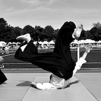

Le club Kannagara dispose d'une équipe d'enseignants expérimentés et diplômés, formés dans la tradition de l'aïkido transmise par Maître Tamura.

Jean-Marc Chamot
7ème Dan Aïkido - 4e Dan Iaïdo
Diplôme : DESJEPS (Diplôme d'État Supérieur de la Jeunesse, de l'Éducation Populaire et du Sport)
Fonction fédérale : Cadre technique FFAB
Parcours
Jean-Marc débute l'Aïkido au début des années 70, à l'âge de 17 ans, au sein du groupe d'André Nocquet, premier uchi-deshi (élève interne) étranger de Ueshiba Moriheï, fondateur de l'Aïkido. Très rapidement cette discipline martiale devient sa passion et sa route croise alors celles de nombreuses personnalités de l'Aïkido comme les maîtres Tohei Koichi, Tada Hiroshi, Yamaguchi Seigo, Nakazano Mutsuharu, Noro Masamichi, Yamada Yoshimitsu.
Dès sa première année de pratique il commence à suivre assidûment l'enseignement de Tamura Nobuyoshi – qui devient sa référence – ainsi que celui de Sugano Seichi dont il assure l'interprétariat en France pendant les neuf années que celui-ci passe en Europe. Lors de visites au Japon il fait également connaissance des maîtres de l'Aïkikaï, et s'entraîne à Iwama, dans le dojo de Saïto Morihiro.
Parallèlement à l'Aïkido, Jean-Marc a pratiqué le Judo, le Karaté, le Jodo pendant plusieurs années. Il étudie et enseigne également le Iaïdo Shindo Muso Ryu depuis la fin des années 70.
Pendant les années 80, il passe avec succès le 1er degré du brevet d'éducateur sportif puis le 2nd degré pour lequel il est major de promotion. Depuis près de 40 ans, il dirige des stages tant en France qu'à l'étranger et a participé à la formation de très nombreux pratiquants et enseignants.
Ce qu'il aime retrouver sur le tatami, c'est cette sensation de fraternité et de plaisir dans l'effort que l'on rencontre dans un dojo et il s'efforce d'y contribuer par son sérieux comme par sa bonne humeur.
Nacer Chekkaba
4ème Dan Aïkido FFAB
Diplôme : BE1
Parcours
Enseignant expérimenté, Nacer apporte sa maîtrise technique et son approche pédagogique aux cours du club. Sa pratique régulière et son investissement dans la vie du club en font un pilier de l'équipe enseignante.
Formé dans la tradition FFAB, il transmet un aïkido rigoureux tout en restant attentif à l'évolution de chaque pratiquant.


Thierry Montfort
4ème Dan Aïkido FFAB
Diplôme : BE1
Parcours
Pratiquant de longue date, Thierry contribue à l'enseignement avec rigueur et passion pour la discipline. Son expérience lui permet d'accompagner aussi bien les débutants que les pratiquants confirmés.
Son engagement au sein du club et sa disponibilité en font un enseignant apprécié de tous les membres.
Germain Chamot
4ème Dan Aïkido Kishinkai
Diplôme : Brevet Fédéral FFAB
Parcours
Germain débute les arts martiaux dès l'enfance par le judo, puis est initié à l'aïkido par son père, Jean-Marc Chamot (7ème Dan). Il pratiquera ensuite de nombreuses années avec Léo Tamaki, fondateur de l'école Kishinkai, et étudie également sous la direction de Maître Kuroda.
Il a été Rédacteur en chef de Dragon Magazine Spécial Aïkido. Ce rôle lui a permis d'échanger avec de nombreux experts de haut niveau. Il contribue également au magazine Aikido Journal.
Au-delà de l'aïkido, Germain est praticien de Shiatsu certifié FFST et a étudié le Yoga. Il considère ces disciplines non pas comme des fins en elles-mêmes, mais comme des moyens d'explorer le potentiel humain.
Cette diversité d'approches et cette double filiation FFAB / Kishinkai enrichissent la pratique de l'ensemble des membres du club Kannagara.


Sébastien Huet
1er Dan Aïkido FFAB
Diplôme : Brevet Fédéral FFAB
Parcours
Sébastien anime les séances d'initiation _"Découvrir avant de s'inscrire"_, permettant aux personnes intéressées de faire leurs premiers pas sur le tatami dans un cadre adapté et bienveillant.
Son approche pédagogique et sa patience en font l'interlocuteur idéal pour accueillir les nouveaux pratiquants et leur faire découvrir les bases de l'aïkido.
Notre approche pédagogique
L'enseignement au club Kannagara se caractérise par :
- Respect de la tradition : Un aïkido fidèle à l'enseignement des maîtres
- Adaptation : Des cours adaptés au niveau et aux capacités de chacun
- Bienveillance : Une atmosphère d'entraide et de respect mutuel
- Progression : Un suivi personnalisé pour chaque pratiquant
- Ouverture : Des stages et échanges avec d'autres clubs